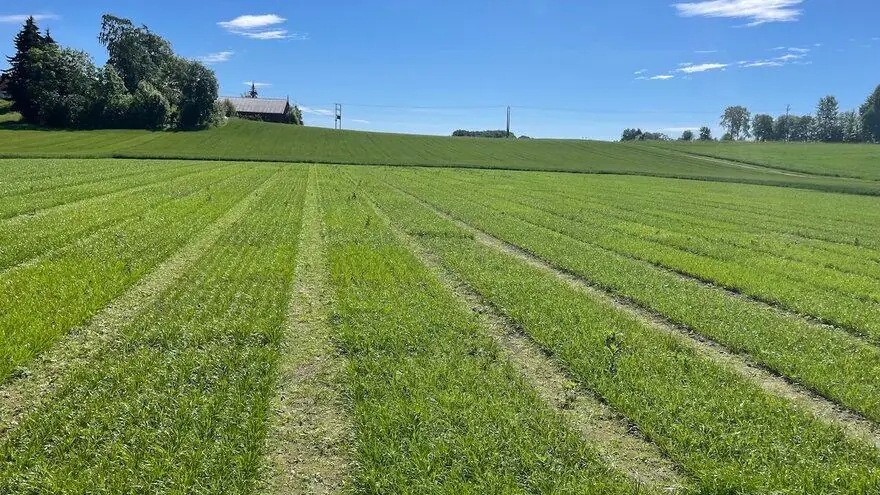

多年生黑麦草的氮利用效率
我们在奥斯和哈马尔比较三个施氮水平下的牧草产量，再对氮利用效率不同的黑麦草材料进行水培，利用单核 RNA 测序确定哪些根细胞表达硝酸盐转运蛋白基因。
我们希望找出在相同施氮量下产量更高的品种，以及在减少施氮后仍能维持产量的品种。
浏览黑麦草根系细胞图谱
40个品种
3个施氮水平
2个试验地点
植物遗传学与育种

我在挪威生命科学大学（NMBU）负责 SustainPlant 研究组，同时与 Graminor 的育种团队合作。我的研究关注多年生牧草如何利用氮，以及如何选育兼具高产和越冬能力的品种。

每个施氮水平比较40个品种
我的田间试验主要研究梯牧草和多年生黑麦草。我结合群体遗传学、根系转录组学和田间表型测定，研究牧草育种中需要选择的性状。
我们在奥斯和哈马尔比较三个施氮水平下的牧草产量，再对氮利用效率不同的黑麦草材料进行水培，利用单核 RNA 测序确定哪些根细胞表达硝酸盐转运蛋白基因。
我们希望找出在相同施氮量下产量更高的品种，以及在减少施氮后仍能维持产量的品种。
浏览黑麦草根系细胞图谱我们与 Graminor 合作，在梯牧草中比较了九种基因组预测模型。在训练群体内进行交叉验证时，预测值与实测值的平均相关系数为 0.62；在 213 个独立家系中验证时，该值降至 0.16。
独立家系验证更接近育种者为下一轮杂交选择亲本的实际情形。
阅读梯牧草研究论文30 种性状与数据集组合的平均 Pearson 相关系数。图示范围为 0 至 1。
北方梯牧草品种的种子常在较低纬度地区繁育。我们追踪不同繁种世代的等位基因频率和基因表达，并检测植株经历低温冻结和冰封后的恢复能力。
我们关注的是，品种经异地繁种后能否保持育成时的越冬能力。
阅读越冬胁迫研究论文我们比较了结实率不同的四倍体红三叶植株的基因表达，也为草甸羊茅建立了开放的基因组数据库，供研究者定位基因和比较序列。
在 GE-Sustain 项目中，我也参与发掘与马铃薯抗病性和加工品质相关的基因。
阅读红三叶研究论文截至2026年11月的项目及工作包预算。
≈4,500万挪威克朗
经费总额涵盖我负责的六个研究项目、一个博士课题，以及 GE-Sustain 中由我负责的工作包。
外部经费来自挪威研究理事会、挪威农业与食品产业研究基金（FFL/JA）以及企业合作伙伴。
我们跟踪氮素从禾草与三叶草混播草地经饲草进入奶牛的过程，同时测定饲草品质、氮损失和甲烷排放。挪威研究理事会资助1,600万挪威克朗，企业伙伴资助130万挪威克朗。合作方包括 TINE、Graminor、Yara 和挪威农业推广服务机构。
NMBU 的 Soil2Milk 项目介绍我们在挪威奥斯和哈马尔比较40个多年生黑麦草品种在三个施氮水平下的表现。借助田间机器人、无人机和传感器，我们研究冠层性状与干物质产量、饲草品质之间的关系。公共资金和企业资助分别为986万和214万挪威克朗。合作方包括 Graminor、BioDrone 和埃森哲。
NMBU 的 DLT-Farming 项目介绍我们每天进行三维扫描，记录黑麦草和燕麦在不同供氮水平下的生长过程，再结合基因组数据，建立不同基因型对施肥响应的模型。项目由 NMBU 与挪威植物表型研究基础设施平台（PheNo）资助。
NMBU 的 TWIN-NUE 项目介绍这项由 NMBU 资助的博士课题利用基因编辑，检验候选基因如何影响多年生黑麦草对氮素的吸收与利用。
SustainPlant 团队的博士研究我负责鉴定影响马铃薯抗病性和加工品质的基因。由 Graminor 牵头的项目总预算为1,600万挪威克朗，其中我负责的工作包为300万挪威克朗。
SustainPlant 的 GE-Sustain 项目介绍我们与 TINE、Yara 和 Graminor 合作，检验无人机影像与田间测量能否预测牧草粗蛋白含量，从而帮助农户选择收获时间。项目由 FFL/JA 资助。
NMBU 的 ProteinSense 项目介绍在这项由 FFL/JA 资助、与 Graminor 合作的预研项目中，我们在水培条件下筛选黑麦草品种，并选出用于研究氮素运输与代谢的候选基因。
NMBU 的 NitroGenEdit 项目介绍我们将与 Agdir Drift AS 合作，检验卫星数据能否识别氮素盈余且存在淋失风险的草地。项目于2026年获 FFL/JA 资助。
挪威农业管理局资助公告这里展示部分合作项目、科研网络及合著论文。论文按发表时合著者所在机构的国家标注。
合著论文 · 2026
Graminor AS，里达布。
Genomic selection in timothy (Phleum pratense L.): a comprehensive evaluation of prediction models, multi-trait strategies, and forward validation across Norwegian environments合著论文 · 2015
华中农业大学，武汉。
QTL mapping for thermo-sensitive heading date in rice合著论文 · 2016
奥胡斯大学，斯劳厄尔瑟。
Global transcriptome changes in perennial ryegrass during early infection by pink snow mould合著论文 · 2023
塔林理工大学，塔林。
Improving abiotic stress tolerance of forage grasses: prospects of using genome editing合著论文 · 2024
哈瓦萨大学，哈瓦萨。
Limited genetic diversity found among genotypes of the Entada landrace (Ensete ventricosum (Welw.) Cheesman) from Ethiopia合著论文 · 2021
意大利农业研究与经济分析委员会（CREA），洛迪。
Grass and legume breeding matching the future needs of European grassland farming合著论文 · 2023
拉脱维亚大学，里加。
Improving abiotic stress tolerance of forage grasses: prospects of using genome editing合著论文 · 2023
立陶宛农林研究中心，Akademija。
Improving abiotic stress tolerance of forage grasses: prospects of using genome editing科研网络
该牧草泛基因组联盟由苏黎世联邦理工学院牵头。SustainPlant 参与开发比较基因组浏览器，并分析牧草基因组的演化。
International Lolium-Festuca Pangenome Consortium合著论文 · 2023
加利福尼亚大学戴维斯分校。
该合著者同时隶属于埃塞俄比亚的默克莱大学。
"People gathered by sorghum": cultural practices and sorghum diversity in northern Ethiopia此处收录28篇同行评议论文。国家归属依据合著者在论文中署名的机构，同一篇论文可列入多个国家。项目与科研网络另行标注。
在田间，学生实地比较不同牧草的生长表现。在基因组学课堂上，他们分析课题组的试验数据，并说明自己的判断有何依据。
2026年起担任课程负责人及主讲教师
我负责教学安排与考核，包括在 Vollebekk 开展的田间教学。学生根据反馈修改报告，再向全班介绍自己的结果。
2015年起负责测序分析模块
我教授 RNA 测序和遗传变异分析。学生在上机课上分析课题组的真实数据，解释研究结果反映了哪些植物生物学过程。
2024至2025年参与授课
我承担了这门硕博课程约一半的教学，以育种群体为例讲解遗传漂变、选择和有效群体大小。
我曾在 NMBU 讲授植物生物技术（BIO244）、基因功能（BIO327）和植物表型分析（BIO312）专题，也通过 EditGrass4Food 项目为爱沙尼亚 TalTech 和立陶宛 LAMMC 的博士生讲授转录组分析。
2023年，我在 NMBU 完成了硕博士生指导培训（5个欧洲学分）。2026至2027学年，我在东福尔大学学院修读大学教学课程（10个欧洲学分）。
基于挪威育种材料比较九种模型，并用独立家系进行验证。
研究比较了两个梯牧草品种在不同繁种世代中的遗传与表达差异。
根系细胞图谱揭示了一种与氮利用效率差异相关的皮层细胞状态。
以20%的工作时间在哈马尔参与牧草及谷物育种项目，开展基因组预测、预育种和作物建模。
挪威生命科学大学植物科学系。
研究北欧栽培条件下异花授粉作物的群体遗传学和数量遗传学。
在 VARCLIM 项目中研究多年生牧草的适应性，试验覆盖挪威从奥斯到阿尔塔的五个地点。
在武汉攻读生物化学与分子生物学博士学位，研究水稻产量构成性状的遗传基础。
2005年，于印度班加罗尔大学获生物技术硕士学位。
2003年，于印度蒂鲁帕蒂斯里文卡特斯瓦拉大学获微生物学、生物化学和化学学士学位。

2025年，欧洲育种研究协会（EUCARPIA）饲用作物与草坪草分会在英国威尔士阿伯里斯特威斯的年会上向我颁发此奖，以表彰我在牧草与草坪草育种方面的工作。